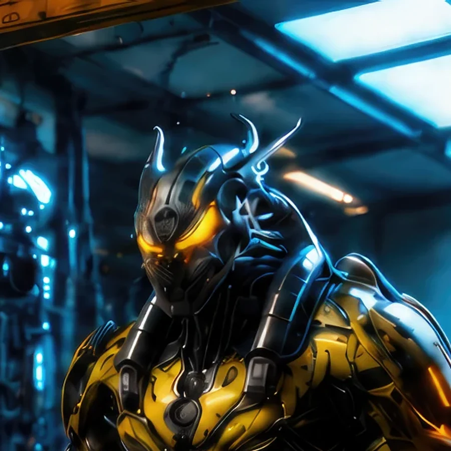
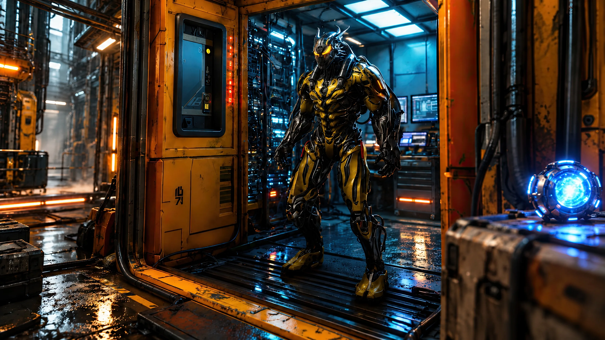
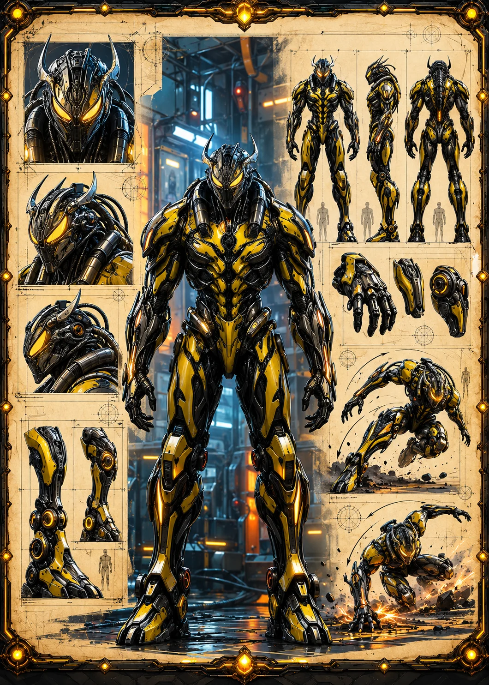

Field Observation
A blue orb glows on a pedestal-like surface to Galvern's right.
 ©
©
GENEZYS ARCHIVE · EARTH 1 · Synthbot
Blight Conjurer
Identity & combat record
Archive node 01 / 05

Archive record
Galvorn shrouds the battlefield in a toxic fog that the Horde can breathe and its enemies cannot. The Noxious Veil strikes the flanks and the center of an enemy line at once. Wherever Galvorn walks, the Spore takes root.
Combat signature
Shrouds battlefield in toxic fog: Deals 80 damage to enemies on the edges and 90 damage to the enemy in the middle.
Genezys 10:06 ™&©2026LEGIONS
Recovered visual record
Archive node 02 / 05

Full frame available // rotate device to landscape
Technical archive
Archive node 03 / 05

Classified field intelligence
Archive node 04 / 05
FIELD REPORT // ENERGY OBJECT
Field Observation
A blue orb glows on a pedestal-like surface to Galvern's right.
Environment
Object Analysis
Key Findings
Motion archive
Archive node 05 / 05
Motion record not yet recovered